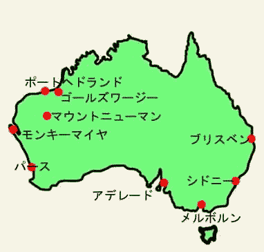
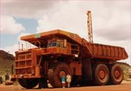
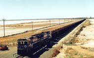
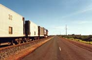

２３．「私の数奇な運命」(写真あり)
自分の人生を振り返ると、こうしたい、行ってみたいと思ったことが結構実現していた。今からん十年前の
小学校２年の時、ユネスコで基金を募集していた。エジプトでアスワンハイダムを造るとアブシンベル神殿が
湖底に沈むので高台に移設する費用を集っていた。子供心ながらエジプトという響きとアブシンベルが湖底に
沈む事に何かを感じ、母親に頼んで１０円寄付をした。この事は何時までも覚えており、社会の授業にアスワ
ンハイダムの話がでる度に思いだしていた。またその頃同じクラスの友達と遊んでいたら、ブーメランを見せ
てくれた。何処かの国の人が狩猟に使っている。そこにはエアーズロックという大きな岩山があると教えてく
れた。フーン、行ってみたいなと思ったことは忘れていた。中学１年か小学６年頃１９６３年頃にテレビで盛
んに何処かの世界最大露天掘り鉄鉱山を放送していた。世界最大級１００トンダンプが港町に疾駆しており、
ナレーションは鉄道が間もなく開通し港まで鉄鉱石を運ぶようになると案内していた。１００トンダンプの脇
をワゴン車が走っているが、ヘリからの撮影では豆粒に写っていた、いかに１００トンダンプが大きいかが良
く分かった。何故か行ってみたいという気持ちが湧いた、観光でもよいから訪れたい、世界最大なら場所を忘
れても何とかなると思っていた、これも場所を忘れたが、世界最大露天掘りの鉱山と１００トンダンプだけは
何時までも忘れられなかった。他に行ってみたいと確実に覚えているのはギリシャのパルテノン神殿である。
エジプトに赴任し、休暇でギリシャに訪れパルテノン神殿に行った。又間もなく日本に帰国するという半年
前にアブシンベルを訪れることができた。

帰国後しばらくして今度はオーストラリアに赴任する。鉄鉱石の輸
出検定立ち会いである。そこの事務所が３０周年記念と言うことで書類整理していたら、１９６３年頃に生産
開始していたことが分かった、え？もしかしてテレビで放映していたのはここゴールズワージーだったのか、
そうだったようである。ゴールズワージーの響きは何となく思い出すような気もした。いつか観光で行ってみ
ようと思った世界最大露天掘り鉄鉱山に仕事で来ているとは奇遇としか思えなかった。この時、ゴールズワー
ジーは枯渇していて、マウント・ニューマンが世界最大の露天掘りである。家族で訪れたのは言うまでもない、

１００トンダンプは２００トンダンプに変わっていた。写真のタイヤの直径は約３Ｍ強ある。全体で３階建ての
ビルディングの大きさになる。鉄道は一度に約２万トンを運ぶ、貨物車は２５０両く
らいで全長２．５ｋｍ位の長い列車になる。先頭と中間に２台ずつの大きな機関車が牽引している。隣の鉄鉱

山では全長６ｋｍに成功したと聞いている。２．５ｋｍの長さが実感しないと思う、新宿駅から新宿通りでＪ
Ｒ四谷駅までになる。又新宿から原宿、或いは新宿から高田馬場、２駅位になる。６ｋｍとなると新宿駅から
直線で東京駅位になる。そんな長い列車は日本ではもちろん走っていない。
右下の写真は中学１年頃にＴＶでみたゴールヅ・ワージー鉱山鉄道の列車。向こう端に事務所が有る。赴任した頃、この道
路の制限速度は１１０ｋｍ／ｈｒであった。偶に車とすれ違うと怖い物がある。

|